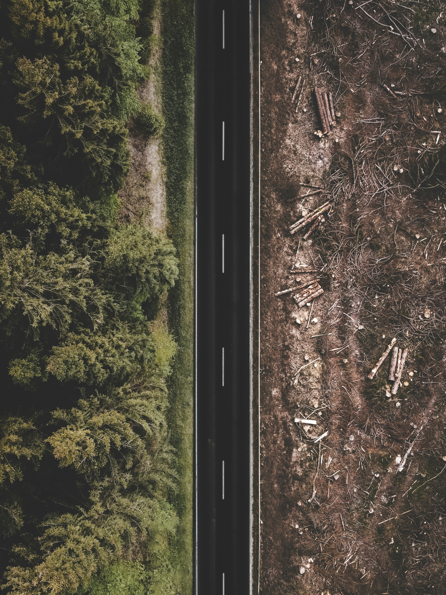
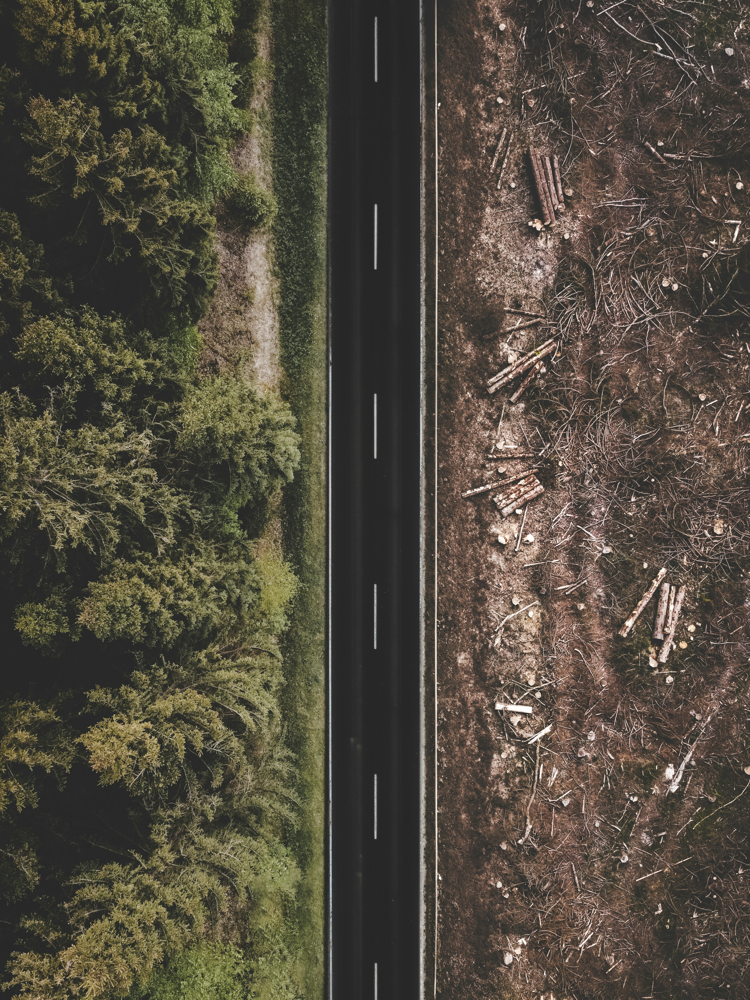

Introduction
Deforestation, or the mass loss of forests and trees, is a serious danger to biodiversity, the environment, and human health. It is fueled by things like urbanization, forestry, and expanding agriculture. It damages ecosystems and contributes to atmospheric carbon dioxide emissions, undermining attempts to slow down global warming. The priceless ecological and socioeconomic advantages that forests provide must be preserved, hence immediate action is required to address this issue through conservation measures, sustainable land management techniques, and international cooperation.
Deforestation
Deforestation is the term used to describe the vast destruction of forests and trees, mostly as a result of logging, urbanization, and agriculture. This has a substantial negative influence on the environment and civilization as it causes habitat loss, a fall in biodiversity, and an increase in carbon emissions.

 

Deforestation Impact Comparison: Selective Cutting vs. Clearcutting
| Impact Category | Forest Management | |
|---|---|---|
| Selective Cutting | Clear cutting | |
| Trees Removed | Specific trees based on size, age, species, or health | All or nearly all trees in an area |
| Forest Disruption | Minimal disruption to overall ecosystem | Significant ecological disruption |
| Habitat Loss | Low impact on most species | High impact, loss of habitat for many plants and animals |
| Soil Erosion | Moderate increase in erosion potential | Severe increase in erosion due to exposed soil |
| Water Cycle | Minimal impact on water flow and quality | Potential disruption of natural water cycles, increased risk of flooding |
| Forest Regeneration | Promotes natural regeneration of new trees and undergrowth | Requires significant effort and time for forest to regrow |
| Biodiversity Impact | Maintains biodiversity by preserving habitats | Significant loss of biodiversity due to habitat destruction |
Statistics - Forest lost globally, Deforestation, Lost from wildfire
Causes of Deforestation
Deforestation, the large-scale removal of trees, is a major
environmental threat with far-reaching consequences. Much like a
complex disease, deforestation has multiple, intertwined causes. Our
ever-growing hunger for resources like farmland, timber, and space
for cities drives the destruction of forests. This relentless
pressure disrupts the delicate balance of ecosystems, but the damage
doesn't stop there. Deforestation weakens the soil, destroys animal
habitats, and even fuels climate change. Understanding these diverse
causes is the first step towards developing effective solutions to
protect our vital forests.
Deforestation is driven by several key factors. The most significant
ones include:
-
Agriculture
This is the biggest driver of deforestation globally. Forests are cleared to create space for farms, ranches, and plantations. This is especially common in developing countries, where people are trying to grow more food to feed their growing populations
-
Logging
Trees are cut down for timber, which is used for lumber, paper, and fuel. Illegal logging is a major problem, especially in rainforests.
-
Mining
Mines remove minerals from the earth, and this can often lead to deforestation. Forests are cleared to make way for mines, and the process of mining can also damage nearby forests
-
Infrastructure Development
As cities grow, they need more land for houses, businesses, and roads. This can lead to deforestation as forests are cleared to make way for development.
-
Urbanization
Roads, dams, and other infrastructure projects can also lead to deforestation. Forests are cleared to make way for construction, and the roads themselves can fragment forests, making it harder for animals to move around.
-
Wild Fire
Wildfires can also cause deforestation. Fires can be started naturally, by lightning strikes for example, or by humans. Climate change is increasing the risk of wildfires, as hotter and drier conditions make forests more susceptible to burning.
-
Drilling
Drilling for oil and gas can also lead to deforestation. Forests are cleared to create roads and well pads for drilling rigs.
Impacts of Deforestation
-
Climate Change
Trees act as the Earth's lungs, absorbing carbon dioxide, a major greenhouse gas, from the atmosphere. When trees are cut down, this stored carbon is released back into the atmosphere, accelerating climate change and global warming.
-
Soil Erosion
Trees hold soil in place with their roots. When deforestation occurs, the exposed soil becomes vulnerable to erosion by wind and rain. This can lead to landslides, floods, and loss of fertile topsoil, impacting agricultural productivity. -
Loss of Biodiversity
Forests are vital habitats for countless species of plants and animals. Deforestation destroys these habitats, leading to the loss of biodiversity and the endangerment of many species. This disrupts the ecological balance and can have cascading effects on entire ecosystems. -
Water Pollution
Forests act as natural filters for water. Without trees, rainwater runoff can carry pollutants from the land, such as fertilizers, pesticides, and sediments, into rivers, streams, and lakes. This can contaminate water sources and harm aquatic ecosystems
Prevention of Deforestation
Curbing deforestation, the relentless removal of Earth's vital forests, demands a global effort. Just as a doctor treats a disease with a multi-pronged approach, we need to address the root causes. Sustainable farming practices that minimize forest clearing for crops are essential. Likewise, responsible logging that prioritizes reforestation can help lessen the pressure on virgin forests. Furthermore, fostering economic development opportunities that don't rely on deforestation empowers communities and reduces reliance on resource extraction. Finally, consumer choices that prioritize products sourced from sustainably managed forests send a powerful message, driving change within industries. By addressing the economic drivers and empowering responsible practices, we can create a future where forests flourish alongside human development.